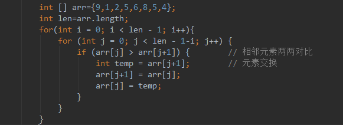
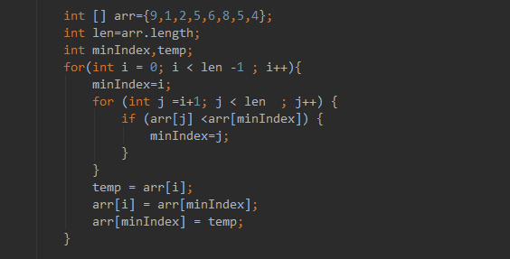
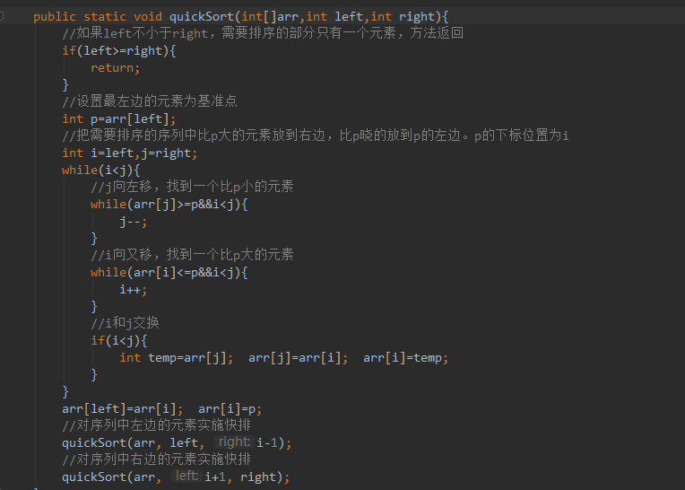
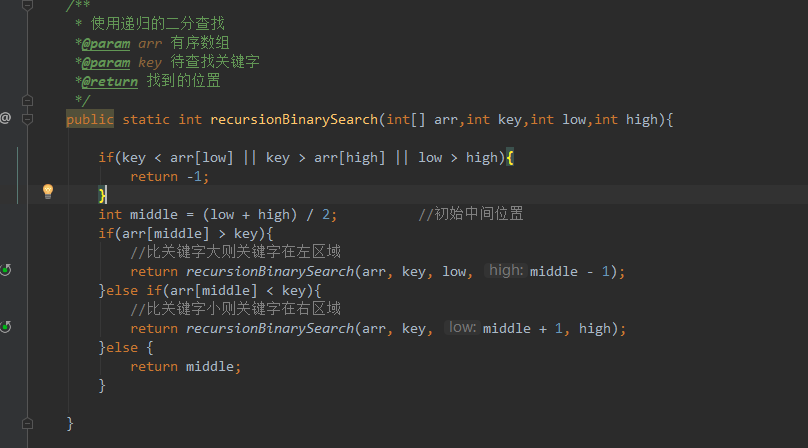
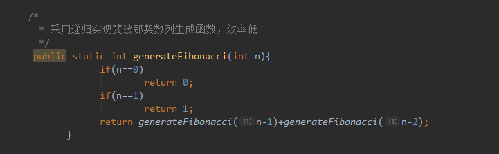

一、冒泡排序（Bubble Sort）
冒泡排序是一种简单的排序算法。它重复地走访过要排序的数列，一次比较两个元素，如果它们的顺序错误就把它们交换过来。走访数列的工作是重复地进行直到没有再需要交换，也就是说该数列已经排序完成。这个算法的名字由来是因为越小的元素会经由交换慢慢“浮”到数列的顶
1.1 算法描述
(1)比较相邻的元素。如果第一个比第二个大，就交换它们两个；(2)对每一对相邻元素作同样的工作，从开始第一对到结尾的最后一对，这样在最后的元素应该会是最大的数； (3)针对所有的元素重复以上的步骤，除了最后一个；(4)重复步骤1~3，直到排序完成。
1.2 java代码实现
二、选择排序（Selection Sort）
选择排序(Selection-sort)是一种简单直观的排序算法。它的工作原理：首先在未排序序列中找到最小（大）元素，存放到排序序列的起始位置，然后，再从剩余未排序元素中继续寻找最小（大）元素，然后放到已排序序列的末尾。以此类推，直到所有元素均排序完毕。
2.1 算法描述
n个记录的直接选择排序可经过n-1趟直接选择排序得到有序结果。具体算法描述如下：(1)初始状态：无序区为R[1..n]，有序区为空；(2) • 第i趟排序(i=1,2,3…n-1)开始时，当前有序区和无序区分别为R[1..i-1]和R(i..n）。该趟排序从当前无序区中-选出关键字最小的记录 R[k]，将它与无序区的第1个记录R交换，使R[1..i]和R[i+1..n)分别变为记录个数增加1个的新有序区和记录个数减少1个的新无序区； (3)n-1趟结束，数组有序化了。
2.2 java代码实现
三、快速排序 （Quick Sort）
采用“分而治之”的思想，把大的拆分为小的，小的拆分为更小的，其原理如下：对于给定的一组记录，选择一个基准元素,通常选择第一个元素或者最后一个元素,通过一趟扫描，将待排序列分成两部分,一部分比基准元素小,一部分大于等于基准元素,此时基准元素在其排好序后的正确位置,然后再用同样的方法递归地排序划分的两部分，直到序列中的所有记录均有序为止。
3.1 算法描述
1、先选定队列中，某一个元素为基数Value（一般选择头元素，或尾元素）。 2、将基数Value依次与所有元素比较大小。按照比较结果将元素分为两个队列A、B。一个所有元素比基数Value大，一个所有元素比基数Value小。 3、将A作为新的队列，再次选定基数，然后分成两个更小的队列 4、就这样一直将每一个小的队列无限的拆分成更小的两个队列。 5、一直到一个队列已经拆分成不能拆封为止（也就是一个元素） 6、因为队列之间的顺序都是固定的。将这些队列一次组合起来，整体的排序就算完成了。
3.2 java代码实现
四、二分查找 （Binary Search ）
有序的序列，每次都是以序列的中间位置的数来与待查找的关键字进行比较，每次缩小一半的查找范围，直到匹配成功。
4.1 二分查找优缺点
优点是比较次数少，查找速度快，平均性能好； 其缺点是要求待查表为有序表，且插入删除困难。 因此，折半查找方法适用于不经常变动而查找频繁的有序列表。
4.2 java代码实现
五、斐波那契数列（Fibonacci）
5.1java代码实现
参考文章：
https://www.cnblogs.com/onepixel/articles/7674659.html
https://blog.csdn.net/jianyuerensheng/article/details/51258374
https://blog.csdn.net/maoyuanming0806/article/details/78176957
https://blog.csdn.net/DuHacker/article/details/48295807